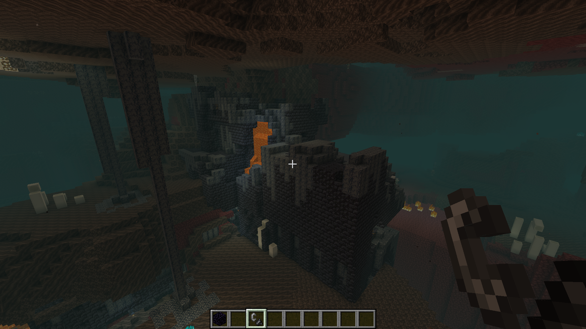

Приветствуем на второй части сайта
Данный сайт будет разделён на 3 части. В первой части будет рассказано о игре CS:GO. Во второй части будет рассказано о игре Minecraft. В третьй части будет рассказано о игре Dota 2.
Minecraft
Minecraft - компьютерная инди-игра в жанре песочницы,
также в неё можно играть по сети, скачивать дополнения (моды, текстурпаки,
шейдеры).

Плюсы игры
1. Игра легкая в освоении.
2. Игровой мир. Генерация ландшафта, огморный открытый мир. Разнообразие биомов.
3. Оромное разнообразие блоков
Из данных блоков можно делать разнообразные постройки
4. Свобода творчества.
5. Обновления. В Minecraft обновления вносят большой интересный дополнительный контент
6. Также можно играть по сети с друзьями, игроками, что делает игру интереснее и разнообразние.
Локации.
Еще в Minecraft много локаций, которые можно посетить.

Босcы
В игре присутствуют два босса, это Визер и Дракон.

Механизмы
В Minecraft можно соорудить множество механизом и даже ловушки из-за большого разнообразия блоков.
Пример механизма для открывания ворот.
Текстурпаки, шейдеры, моды.
Пример текстурпака.
Пример шейдеров.
Пример модов.
Третья часть про Dota 2
Dota